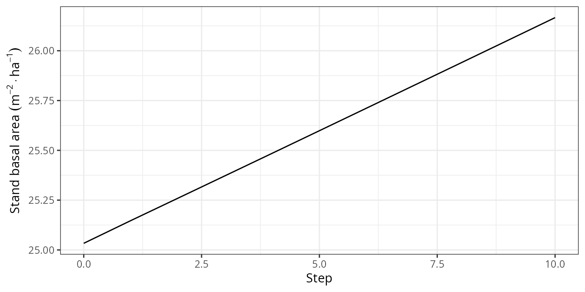
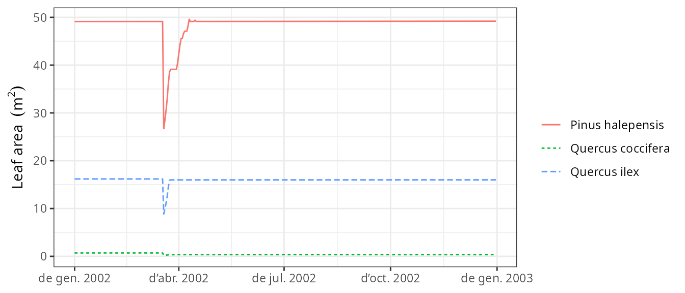
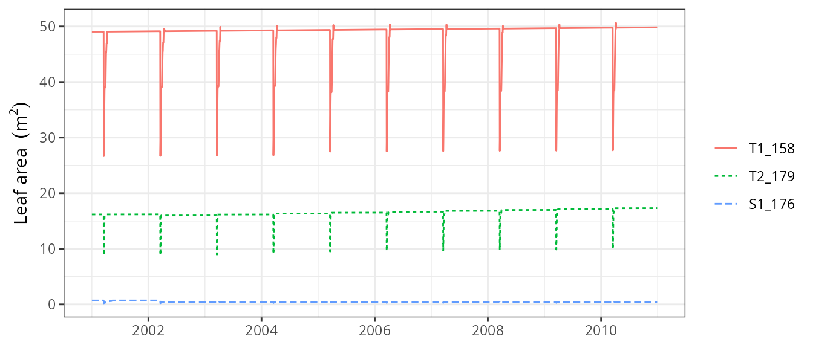

Forest dynamics
Miquel De Caceres
2026-05-05
Source:vignettes/runmodels/ForestDynamics.Rmd
ForestDynamics.RmdAbout this vignette
This document describes how to run the forest dynamics model of
medfate, described in De Cáceres et al. (2023) and
implemented in function fordyn(). This document is meant to
teach users to run the simulation model with function
fordyn(). Details of the model design and formulation can
be found at the corresponding chapters of the medfate
book.
Because the model builds on the growth and water balance models, the
reader is assumed here to be familiarized with spwb() and
growth() (otherwise read vignettes Basic
water balance and Forest
growth).
Preparing model inputs
Any forest dynamics model needs information on climate, vegetation
and soils of the forest stand to be simulated. Moreover, since models in
medfate differentiate between species, information on
species-specific model parameters is also needed. In this subsection we
explain the different steps to prepare the data needed to run function
fordyn().
Model inputs are explained in greater detail in vignettes Understanding
model inputs and Preparing
model inputs. Here we only review the different steps required
to run function fordyn().
Soil, vegetation, meteorology and species data
Soil information needs to be entered as a data frame
with soil layers in rows and physical attributes in columns. Soil
physical attributes can be initialized to default values, for a given
number of layers, using function defaultSoilParams():
examplesoil <- defaultSoilParams(4)
examplesoil## widths clay sand om nitrogen ph bd rfc
## 1 300 25 25 NA NA NA 1.5 25
## 2 700 25 25 NA NA NA 1.5 45
## 3 1000 25 25 NA NA NA 1.5 75
## 4 2000 25 25 NA NA NA 1.5 95As explained in the package overview, models included in
medfate were primarily designed to be ran on forest
inventory plots. Here we use the example object provided with
the package:
data(exampleforest)
exampleforest## $treeData
## Species DBH Height N Z50 Z95
## 1 Pinus halepensis 37.55 800 168 100 300
## 2 Quercus ilex 14.60 660 384 300 1000
##
## $shrubData
## Species Height Cover Z50 Z95
## 1 Quercus coccifera 80 3.75 200 1000
##
## attr(,"class")
## [1] "forest" "list"We can keep track of cohort age if we define a column called
Age in tree or shrub data, for example let us assume we
know the age of the two tree cohorts:
exampleforest$treeData$Age <- c(40, 24)Importantly, a data frame with daily weather for the period to be simulated is required. Here we use the default data frame included with the package:
## dates MinTemperature MaxTemperature Precipitation MinRelativeHumidity
## 1 2001-01-01 -0.5934215 6.287950 4.869109 65.15411
## 2 2001-01-02 -2.3662458 4.569737 2.498292 57.43761
## 3 2001-01-03 -3.8541036 2.661951 0.000000 58.77432
## 4 2001-01-04 -1.8744860 3.097705 5.796973 66.84256
## 5 2001-01-05 0.3288287 7.551532 1.884401 62.97656
## 6 2001-01-06 0.5461322 7.186784 13.359801 74.25754
## MaxRelativeHumidity Radiation WindSpeed
## 1 100.00000 12.89251 2.000000
## 2 94.71780 13.03079 7.662544
## 3 94.66823 16.90722 2.000000
## 4 95.80950 11.07275 2.000000
## 5 100.00000 13.45205 7.581347
## 6 100.00000 12.84841 6.570501Finally, simulations in medfate require a data frame
with species parameter values, which we load using defaults for
Catalonia (NE Spain):
data("SpParamsMED")Simulation control
Apart from data inputs, the behaviour of simulation models can be
controlled using a set of global parameters. The default
parameterization is obtained using function
defaultControl():
control <- defaultControl("Granier")Here we will run simulations of forest dynamics using the basic water
balance model (i.e. transpirationMode = "Granier"). The
complexity of the soil water balance calculations can be changed by
using "Sperry" as input to defaultControl().
However, when running fordyn() sub-daily output will never
be stored (i.e. setting subdailyResults = TRUE is
useless).
Executing the forest dynamics model
In this vignette we will fake a ten-year weather input by repeating the example weather data frame ten times.
meteo <- rbind(examplemeteo, examplemeteo, examplemeteo, examplemeteo,
examplemeteo, examplemeteo, examplemeteo, examplemeteo,
examplemeteo, examplemeteo)
meteo$dates <- as.character(seq(as.Date("2001-01-01"),
as.Date("2010-12-29"), by="day"))Now we run the forest dynamics model using all inputs (note that no
intermediate input object is needed, as in spwb() or
growth()):
fd<-fordyn(exampleforest, examplesoil, SpParamsMED, meteo, control,
latitude = 41.82592, elevation = 100)## Simulating year 2001 (1/10): (a) Growth/mortality, (b) Regeneration nT = 2 nS = 1
## Simulating year 2002 (2/10): (a) Growth/mortality, (b) Regeneration nT = 2 nS = 1
## Simulating year 2003 (3/10): (a) Growth/mortality, (b) Regeneration nT = 2 nS = 1
## Simulating year 2004 (4/10): (a) Growth/mortality, (b) Regeneration nT = 2 nS = 1
## Simulating year 2005 (5/10): (a) Growth/mortality, (b) Regeneration nT = 2 nS = 1
## Simulating year 2006 (6/10): (a) Growth/mortality, (b) Regeneration nT = 2 nS = 1
## Simulating year 2007 (7/10): (a) Growth/mortality, (b) Regeneration nT = 2 nS = 1
## Simulating year 2008 (8/10): (a) Growth/mortality, (b) Regeneration nT = 2 nS = 1
## Simulating year 2009 (9/10): (a) Growth/mortality, (b) Regeneration nT = 2 nS = 1
## Simulating year 2010 (10/10): (a) Growth/mortality, (b) Regeneration nT = 3 nS = 1It is worth noting that, while fordyn() calls function
growth() internally for each simulated year, the
verbose option of the control parameters only affects
function fordyn() (i.e. all console output from
growth() is hidden). Recruitment and summaries are done
only once a year at the level of function fordyn().
Inspecting model outputs
Stand, species and cohort summaries and plots
Among other outputs, function fordyn() calculates
standard summary statistics that describe the structural and
compositional state of the forest at each time step. For example, we can
access stand-level statistics using:
fd$StandSummary## Step NumTreeSpecies NumTreeCohorts NumShrubSpecies NumShrubCohorts
## 1 0 2 2 1 1
## 2 1 2 2 1 1
## 3 2 2 2 1 1
## 4 3 2 2 1 1
## 5 4 2 2 1 1
## 6 5 2 2 1 1
## 7 6 2 2 1 1
## 8 7 2 2 1 1
## 9 8 2 2 1 1
## 10 9 2 2 1 1
## 11 10 2 3 1 1
## TreeDensityLive TreeBasalAreaLive DominantTreeHeight DominantTreeDiameter
## 1 552.0000 25.03330 800.0000 37.55000
## 2 551.3666 25.19550 805.8194 37.65842
## 3 550.7278 25.36204 811.8457 37.77126
## 4 550.0836 25.53074 817.9456 37.88606
## 5 549.4321 25.69966 824.0521 38.00158
## 6 548.7768 25.86878 830.1398 38.11735
## 7 548.1160 26.03761 836.1993 38.23319
## 8 547.4496 26.20607 842.2210 38.34890
## 9 546.7757 26.37390 848.2021 38.46444
## 10 546.0982 26.54109 854.1391 38.57973
## 11 3545.4189 26.94318 860.0322 38.69476
## QuadraticMeanTreeDiameter HartBeckingIndex ShrubCoverLive BasalAreaDead
## 1 24.02949 53.20353 3.750000 0.00000000
## 2 24.12106 52.84964 3.110757 0.03913883
## 3 24.21468 52.48776 3.203668 0.03976581
## 4 24.30930 52.12682 3.279029 0.04041149
## 5 24.40404 51.77121 3.373968 0.04118143
## 6 24.49882 51.42223 3.454639 0.04173437
## 7 24.59345 51.08036 3.552356 0.04240646
## 8 24.68789 50.74600 3.636039 0.04308464
## 9 24.78207 50.41921 3.739017 0.04388896
## 10 24.87591 50.09981 3.825705 0.04445805
## 11 24.96934 49.78749 3.931685 0.04490190
## ShrubCoverDead BasalAreaCut ShrubCoverCut
## 1 0.000000000 0 0
## 2 0.005315863 0 0
## 3 0.004838011 0 0
## 4 0.004970804 0 0
## 5 0.005111612 0 0
## 6 0.005235542 0 0
## 7 0.005369284 0 0
## 8 0.005511444 0 0
## 9 0.005666862 0 0
## 10 0.005800103 0 0
## 11 0.005911602 0 0Species-level analogous statistics are shown using:
fd$SpeciesSummary## Step Species NumCohorts TreeDensityLive TreeBasalAreaLive
## 1 0 Pinus halepensis 1 168.0000 18.604547
## 2 0 Quercus coccifera 1 NA NA
## 3 0 Quercus ilex 1 384.0000 6.428755
## 4 1 Pinus halepensis 1 167.6994 18.678650
## 5 1 Quercus coccifera 1 NA NA
## 6 1 Quercus ilex 1 383.6672 6.516850
## 7 2 Pinus halepensis 1 167.3960 18.756766
## 8 2 Quercus coccifera 1 NA NA
## 9 2 Quercus ilex 1 383.3318 6.605276
## 10 3 Pinus halepensis 1 167.0900 18.836457
## 11 3 Quercus coccifera 1 NA NA
## 12 3 Quercus ilex 1 382.9936 6.694281
## 13 4 Pinus halepensis 1 166.7803 18.916385
## 14 4 Quercus coccifera 1 NA NA
## 15 4 Quercus ilex 1 382.6518 6.783279
## 16 5 Pinus halepensis 1 166.4688 18.996259
## 17 5 Quercus coccifera 1 NA NA
## 18 5 Quercus ilex 1 382.3081 6.872518
## 19 6 Pinus halepensis 1 166.1544 19.075801
## 20 6 Quercus coccifera 1 NA NA
## 21 6 Quercus ilex 1 381.9616 6.961813
## 22 7 Pinus halepensis 1 165.8373 19.154815
## 23 7 Quercus coccifera 1 NA NA
## 24 7 Quercus ilex 1 381.6123 7.051257
## 25 8 Pinus halepensis 1 165.5165 19.233130
## 26 8 Quercus coccifera 1 NA NA
## 27 8 Quercus ilex 1 381.2593 7.140766
## 28 9 Pinus halepensis 1 165.1938 19.310872
## 29 9 Quercus coccifera 1 NA NA
## 30 9 Quercus ilex 1 380.9044 7.230216
## 31 10 Pinus halepensis 1 164.8701 19.388139
## 32 10 Quercus coccifera 1 NA NA
## 33 10 Quercus ilex 2 3380.5488 7.555044
## ShrubCoverLive BasalAreaDead ShrubCoverDead BasalAreaCut ShrubCoverCut
## 1 NA 0.000000000 NA 0 NA
## 2 3.750000 NA 0.000000000 NA 0
## 3 NA 0.000000000 NA 0 NA
## 4 NA 0.033486609 NA 0 NA
## 5 3.110757 NA 0.005315863 NA 0
## 6 NA 0.005652226 NA 0 NA
## 7 NA 0.033985942 NA 0 NA
## 8 3.203668 NA 0.004838011 NA 0
## 9 NA 0.005779870 NA 0 NA
## 10 NA 0.034500808 NA 0 NA
## 11 3.279029 NA 0.004970804 NA 0
## 12 NA 0.005910678 NA 0 NA
## 13 NA 0.035121217 NA 0 NA
## 14 3.373968 NA 0.005111612 NA 0
## 15 NA 0.006060212 NA 0 NA
## 16 NA 0.035555757 NA 0 NA
## 17 3.454639 NA 0.005235542 NA 0
## 18 NA 0.006178616 NA 0 NA
## 19 NA 0.036091157 NA 0 NA
## 20 3.552356 NA 0.005369284 NA 0
## 21 NA 0.006315303 NA 0 NA
## 22 NA 0.036630857 NA 0 NA
## 23 3.636039 NA 0.005511444 NA 0
## 24 NA 0.006453781 NA 0 NA
## 25 NA 0.037276851 NA 0 NA
## 26 3.739017 NA 0.005666862 NA 0
## 27 NA 0.006612113 NA 0 NA
## 28 NA 0.037722261 NA 0 NA
## 29 3.825705 NA 0.005800103 NA 0
## 30 NA 0.006735786 NA 0 NA
## 31 NA 0.038061077 NA 0 NA
## 32 3.931685 NA 0.005911602 NA 0
## 33 NA 0.006840826 NA 0 NAPackage medfate provides a simple plot
function for objects of class fordyn. For example, we can
show the interannual variation in stand-level basal area using:
plot(fd, type = "StandBasalArea")
Tree/shrub tables
Another useful output of fordyn() are tables in long
format with cohort structural information (i.e. DBH, height, density,
etc) for each time step:
fd$TreeTable## Step Year Cohort Species DBH Height N Z50 Z95
## 1 0 NA T1_148 Pinus halepensis 37.55000 800.00000 168.0000 100.0000 300
## 2 0 NA T2_168 Quercus ilex 14.60000 660.00000 384.0000 300.0000 1000
## 3 1 2001 T1_148 Pinus halepensis 37.65842 805.81943 167.6994 100.0000 300
## 4 1 2001 T2_168 Quercus ilex 14.70607 663.29441 383.6672 300.0000 1000
## 5 2 2002 T1_148 Pinus halepensis 37.77126 811.84567 167.3960 100.0000 300
## 6 2 2002 T2_168 Quercus ilex 14.81198 666.57469 383.3318 300.0000 1000
## 7 3 2003 T1_148 Pinus halepensis 37.88606 817.94560 167.0900 100.0000 300
## 8 3 2003 T2_168 Quercus ilex 14.91802 669.85052 382.9936 300.0000 1000
## 9 4 2004 T1_148 Pinus halepensis 38.00158 824.05211 166.7803 100.0000 300
## 10 4 2004 T2_168 Quercus ilex 15.02357 673.10262 382.6518 300.0000 1000
## 11 5 2005 T1_148 Pinus halepensis 38.11735 830.13980 166.4688 100.0000 300
## 12 5 2005 T2_168 Quercus ilex 15.12886 676.33880 382.3081 300.0000 1000
## 13 6 2006 T1_148 Pinus halepensis 38.23319 836.19933 166.1544 100.0000 300
## 14 6 2006 T2_168 Quercus ilex 15.23373 679.55356 381.9616 300.0000 1000
## 15 7 2007 T1_148 Pinus halepensis 38.34890 842.22103 165.8373 100.0000 300
## 16 7 2007 T2_168 Quercus ilex 15.33830 682.75033 381.6123 300.0000 1000
## 17 8 2008 T1_148 Pinus halepensis 38.46444 848.20208 165.5165 100.0000 300
## 18 8 2008 T2_168 Quercus ilex 15.44249 685.92713 381.2593 300.0000 1000
## 19 9 2009 T1_148 Pinus halepensis 38.57973 854.13907 165.1938 100.0000 300
## 20 9 2009 T2_168 Quercus ilex 15.54614 689.07913 380.9044 300.0000 1000
## 21 10 2010 T1_148 Pinus halepensis 38.69476 860.03216 164.8701 100.0000 300
## 22 10 2010 T2_168 Quercus ilex 15.64906 692.20012 380.5488 300.0000 1000
## 23 10 2010 T3_168 Quercus ilex 1.00000 47.23629 3000.0000 439.9059 5020
## Z100 Age ObsID
## 1 NA 40 <NA>
## 2 NA 24 <NA>
## 3 NA 40 NA
## 4 NA 24 NA
## 5 NA 41 NA
## 6 NA 25 NA
## 7 NA 42 NA
## 8 NA 26 NA
## 9 NA 43 NA
## 10 NA 27 NA
## 11 NA 44 NA
## 12 NA 28 NA
## 13 NA 45 NA
## 14 NA 29 NA
## 15 NA 46 NA
## 16 NA 30 NA
## 17 NA 47 NA
## 18 NA 31 NA
## 19 NA 48 NA
## 20 NA 32 NA
## 21 NA 49 NA
## 22 NA 33 NA
## 23 NA 5 <NA>The same can be shown for dead trees:
fd$DeadTreeTable## Step Year Cohort Species DBH Height N N_starvation
## 1 1 2001 T1_148 Pinus halepensis 37.65842 805.8194 0.3006471 0
## 2 1 2001 T2_168 Quercus ilex 14.70607 663.2944 0.3327641 0
## 3 2 2002 T1_148 Pinus halepensis 37.77126 811.8457 0.3033099 0
## 4 2 2002 T2_168 Quercus ilex 14.81198 666.5747 0.3354300 0
## 5 3 2003 T1_148 Pinus halepensis 37.88606 817.9456 0.3060416 0
## 6 3 2003 T2_168 Quercus ilex 14.91802 669.8505 0.3381621 0
## 7 4 2004 T1_148 Pinus halepensis 38.00158 824.0521 0.3096537 0
## 8 4 2004 T2_168 Quercus ilex 15.02357 673.1026 0.3418628 0
## 9 5 2005 T1_148 Pinus halepensis 38.11735 830.1398 0.3115836 0
## 10 5 2005 T2_168 Quercus ilex 15.12886 676.3388 0.3437073 0
## 11 6 2006 T1_148 Pinus halepensis 38.23319 836.1993 0.3143619 0
## 12 6 2006 T2_168 Quercus ilex 15.23373 679.5536 0.3464906 0
## 13 7 2007 T1_148 Pinus halepensis 38.34890 842.2210 0.3171402 0
## 14 7 2007 T2_168 Quercus ilex 15.33830 682.7503 0.3492770 0
## 15 8 2008 T1_148 Pinus halepensis 38.46444 848.2021 0.3207971 0
## 16 8 2008 T2_168 Quercus ilex 15.44249 685.9271 0.3530335 0
## 17 9 2009 T1_148 Pinus halepensis 38.57973 854.1391 0.3226930 0
## 18 9 2009 T2_168 Quercus ilex 15.54614 689.0791 0.3548567 0
## 19 10 2010 T1_148 Pinus halepensis 38.69476 860.0322 0.3236584 0
## 20 10 2010 T2_168 Quercus ilex 15.64906 692.2001 0.3556656 0
## N_dessication N_burnt N_resprouting_stumps Z50 Z95 Z100 Age ObsID
## 1 0 0 0 100 300 NA 40 NA
## 2 0 0 0 300 1000 NA 24 NA
## 3 0 0 0 100 300 NA 40 NA
## 4 0 0 0 300 1000 NA 24 NA
## 5 0 0 0 100 300 NA 41 NA
## 6 0 0 0 300 1000 NA 25 NA
## 7 0 0 0 100 300 NA 42 NA
## 8 0 0 0 300 1000 NA 26 NA
## 9 0 0 0 100 300 NA 43 NA
## 10 0 0 0 300 1000 NA 27 NA
## 11 0 0 0 100 300 NA 44 NA
## 12 0 0 0 300 1000 NA 28 NA
## 13 0 0 0 100 300 NA 45 NA
## 14 0 0 0 300 1000 NA 29 NA
## 15 0 0 0 100 300 NA 46 NA
## 16 0 0 0 300 1000 NA 30 NA
## 17 0 0 0 100 300 NA 47 NA
## 18 0 0 0 300 1000 NA 31 NA
## 19 0 0 0 100 300 NA 48 NA
## 20 0 0 0 300 1000 NA 32 NAAccessing the output from function growth()
Since function fordyn() makes internal calls to function
growth(), it stores the result in a vector called
GrowthResults, which we can use to inspect intra-annual
patterns of desired variables. For example, the following shows the leaf
area for individuals of the three cohorts during the second year:
plot(fd$GrowthResults[[2]], "LeafArea", bySpecies = T)
Instead of examining year by year, it is possible to plot the whole series of results by passing afordyn object to the
plot() function:
plot(fd, "LeafArea")
We can also create interactive plots for particular steps using
function shinyplot(), e.g.:
shinyplot(fd$GrowthResults[[1]])Finally, calling function extract() will extract and
bind outputs for all the internal calls to function
growth():
## # A tibble: 3,650 × 51
## date PET Precipitation Rain Snow NetRain Snowmelt Infiltration
## <date> [L/m^2] [L/m^2] [L/m^2] [L/m^… [L/m^2] [L/m^2] [L/m^2]
## 1 2001-01-01 0.883 4.87 4.87 0 3.60 0 3.60
## 2 2001-01-02 1.64 2.50 2.50 0 1.25 0 1.25
## 3 2001-01-03 1.30 0 0 0 0 0 0
## 4 2001-01-04 0.569 5.80 5.80 0 4.54 0 4.54
## 5 2001-01-05 1.68 1.88 1.88 0 0.822 0 0.822
## 6 2001-01-06 1.21 13.4 13.4 0 11.9 0 11.9
## 7 2001-01-07 0.637 5.38 0 5.38 0 0 0
## 8 2001-01-08 0.832 0 0 0 0 0 0
## 9 2001-01-09 1.98 0 0 0 0 0 0
## 10 2001-01-10 0.829 5.12 5.12 0 3.85 5.38 9.23
## # ℹ 3,640 more rows
## # ℹ 43 more variables: InfiltrationExcess [L/m^2], SaturationExcess [L/m^2],
## # Runoff [L/m^2], DeepDrainage [L/m^2], CapillarityRise [L/m^2],
## # Evapotranspiration [L/m^2], Interception [L/m^2], SoilEvaporation [L/m^2],
## # HerbTranspiration [L/m^2], PlantExtraction [L/m^2], Transpiration [L/m^2],
## # HydraulicRedistribution [L/m^2], LAI [m^2/m^2], LAIherb [m^2/m^2],
## # LAIlive [m^2/m^2], LAIexpanded [m^2/m^2], LAIdead [m^2/m^2], Cm [L/m^2], …Forest dynamics including management
The package allows including forest management in simulations of
forest dynamics. This is done in a very flexible manner, in the sense
that fordyn() allows the user to supply an arbitrary
function implementing a desired management strategy for the stand whose
dynamics are to be simulated. The package includes, however, an in-built
default function called defaultManagementFunction() along
with a flexible parameterization, a list with defaults provided by
function defaultManagementArguments().
Here we provide an example of simulations including forest management:
# Default arguments
args <- defaultManagementArguments()
# Here one can modify defaults before calling fordyn()
#
# Simulation
fd<-fordyn(exampleforest, examplesoil, SpParamsMED, meteo, control,
latitude = 41.82592, elevation = 100,
management_function = defaultManagementFunction,
management_args = args)## Simulating year 2001 (1/10): (a) Growth/mortality & management [thinning], (b) Regeneration nT = 2 nS = 2
## Simulating year 2002 (2/10): (a) Growth/mortality & management [none], (b) Regeneration nT = 2 nS = 2
## Simulating year 2003 (3/10): (a) Growth/mortality & management [none], (b) Regeneration nT = 2 nS = 2
## Simulating year 2004 (4/10): (a) Growth/mortality & management [none], (b) Regeneration nT = 2 nS = 2
## Simulating year 2005 (5/10): (a) Growth/mortality & management [none], (b) Regeneration nT = 2 nS = 2
## Simulating year 2006 (6/10): (a) Growth/mortality & management [none], (b) Regeneration nT = 2 nS = 2
## Simulating year 2007 (7/10): (a) Growth/mortality & management [none], (b) Regeneration nT = 2 nS = 2
## Simulating year 2008 (8/10): (a) Growth/mortality & management [none], (b) Regeneration nT = 2 nS = 2
## Simulating year 2009 (9/10): (a) Growth/mortality & management [none], (b) Regeneration nT = 2 nS = 2
## Simulating year 2010 (10/10): (a) Growth/mortality & management [none], (b) Regeneration nT = 2 nS = 2When management is included in simulations, two additional tables are produced, corresponding to the trees and shrubs that were cut, e.g.:
fd$CutTreeTable## Step Year Cohort Species DBH Height N Z50 Z95 Z100
## 1 1 2001 T1_148 Pinus halepensis 37.65842 805.8194 9.353427 100 300 NA
## 2 1 2001 T2_168 Quercus ilex 14.70607 663.2944 383.667236 300 1000 NA
## Age ObsID
## 1 40 NA
## 2 24 NAManagement parameters were those of an irregular model with thinning interventions from ‘below’, indicating that smaller trees were to be cut earlier:
args$type## [1] "irregular"
args$thinning## [1] "below"Note that in this example, there is resprouting of Quercus ilex after the thinning intervention, evidenced by the new cohort (T3_168) appearing in year 2001:
fd$TreeTable## Step Year Cohort Species DBH Height N Z50 Z95
## 1 0 NA T1_148 Pinus halepensis 37.550000 800.00000 168.0000 100 300
## 2 0 NA T2_168 Quercus ilex 14.600000 660.00000 384.0000 300 1000
## 3 1 2001 T1_148 Pinus halepensis 37.658419 805.81943 158.3459 100 300
## 4 1 2001 T3_168 Quercus ilex 1.000000 47.23629 3000.0000 300 1000
## 5 2 2002 T1_148 Pinus halepensis 37.774627 811.95965 158.1748 100 300
## 6 2 2002 T3_168 Quercus ilex 1.018270 48.34500 2942.8026 300 1000
## 7 3 2003 T1_148 Pinus halepensis 37.894114 818.24676 158.0026 100 300
## 8 3 2003 T3_168 Quercus ilex 1.034422 49.32869 2893.9785 300 1000
## 9 4 2004 T1_148 Pinus halepensis 38.014111 824.52699 157.8288 100 300
## 10 4 2004 T3_168 Quercus ilex 1.050765 50.32453 2846.1460 300 1000
## 11 5 2005 T1_148 Pinus halepensis 38.134180 830.77734 157.6544 100 300
## 12 5 2005 T3_168 Quercus ilex 1.067447 51.34153 2798.8871 300 1000
## 13 6 2006 T1_148 Pinus halepensis 38.254193 836.99084 157.4789 100 300
## 14 6 2006 T3_168 Quercus ilex 1.084504 52.38196 2752.1128 300 1000
## 15 7 2007 T1_148 Pinus halepensis 38.374154 843.16821 157.3023 100 300
## 16 7 2007 T3_168 Quercus ilex 1.101942 53.44625 2705.8360 300 1000
## 17 8 2008 T1_148 Pinus halepensis 38.493941 849.30337 157.1241 100 300
## 18 8 2008 T3_168 Quercus ilex 1.119767 54.53472 2660.0655 300 1000
## 19 9 2009 T1_148 Pinus halepensis 38.613528 855.39532 156.9453 100 300
## 20 9 2009 T3_168 Quercus ilex 1.137986 55.64781 2614.8162 300 1000
## 21 10 2010 T1_148 Pinus halepensis 38.732898 861.44348 156.7664 100 300
## 22 10 2010 T3_168 Quercus ilex 1.156607 56.78611 2570.0937 300 1000
## Z100 Age ObsID
## 1 NA 40 <NA>
## 2 NA 24 <NA>
## 3 NA 40 NA
## 4 NA 24 <NA>
## 5 NA 41 NA
## 6 NA 24 NA
## 7 NA 42 NA
## 8 NA 25 NA
## 9 NA 43 NA
## 10 NA 26 NA
## 11 NA 44 NA
## 12 NA 27 NA
## 13 NA 45 NA
## 14 NA 28 NA
## 15 NA 46 NA
## 16 NA 29 NA
## 17 NA 47 NA
## 18 NA 30 NA
## 19 NA 48 NA
## 20 NA 31 NA
## 21 NA 49 NA
## 22 NA 32 NAReferences
- De Cáceres M, Molowny-Horas R, Cabon A, Martínez-Vilalta J, Mencuccini M, García-Valdés R, Nadal-Sala D, Sabaté S, Martin-StPaul N, Morin X, D’Adamo F, Batllori E, Améztegui A (2023) MEDFATE 2.9.3: A trait-enabled model to simulate Mediterranean forest function and dynamics at regional scales. Geoscientific Model Development 16: 3165-3201 (https://doi.org/10.5194/gmd-16-3165-2023).